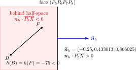
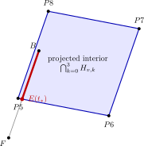
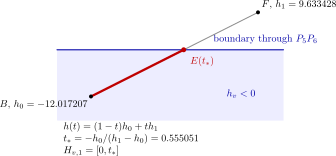

Phép chiếu đa diện và khử đường khuất¶
Bài toán¶
Project trong thư mục polyhedron dựng hình chiếu trực giao của một đa diện lên mặt phẳng \(Oxy\) và chỉ giữ những phần cạnh nhìn thấy. Hướng quan sát cố định là
Điểm có tọa độ \(z\) lớn hơn nằm gần người quan sát hơn. Một mặt phía trên che phần cạnh phía dưới khi hình chiếu của cạnh nằm trong hình chiếu của mặt.
Khác depth buffer, thuật toán này không rasterize toàn bộ bề mặt. Nó biểu diễn chính xác mỗi cạnh bằng một tham số liên tục và trừ khỏi cạnh các khoảng bị từng mặt che. Kết quả phù hợp với wireframe và bản vẽ kỹ thuật.
Dữ liệu đa diện¶
Lớp R3 trong polyhedron/common/r3.py lưu bộ ba tọa độ. Về mặt
hình học, tài liệu vẫn phân biệt điểm \(A, B, \ldots\) với vector
\(\bm{u}, \bm{v}, \ldots\). Các phép toán vector mà lớp hỗ trợ gồm
Khi nạp mô hình, mỗi đỉnh được co giãn và quay theo góc Euler \(z\)--\(y\)--\(z\):
Ở đây \([P]\) là cột tọa độ của điểm \(P\) trong hệ quy chiếu đang dùng, không phải bản thân điểm.
Thứ tự phép quay là thiết yếu vì các ma trận quay không giao hoán.
Tệp .geom lưu số đỉnh \(n_v\), số mặt \(n_f\) và số cạnh mô tả \(n_e\). Mỗi mặt được cho bởi một chu trình chỉ số
Các giả thiết hình học của hiện thực:
mỗi mặt phẳng và lồi;
các đỉnh mặt được sắp theo thứ tự đi quanh biên;
hai mặt chung cạnh dùng cùng hai đỉnh, dù có thể ngược hướng;
các cạnh trùng được hợp nhất trước khi xét che khuất.
Phép chiếu và tọa độ màn hình¶
Phép chiếu trực giao là
TkDrawer đổi tọa độ phẳng sang pixel bằng
Dấu trừ ở \(Y\) bù cho trục dọc của canvas hướng xuống.
{kind=link}
Tham số hóa cạnh¶
Các hình tiếp theo dùng một phép tính cụ thể từ ccc.geom. Ta xét cạnh
\(B=P_4\) tới \(F=P_1\) và mặt che
\((P_5P_6P_7P_8)\). Ta chỉ áp dụng các góc quay Euler ghi trong tệp và bỏ
qua hệ số co giãn \(c=40\), vì hệ số này không thay đổi quan hệ che khuất.
Khi đó
Gọi \(B\) và \(F\) là hai đầu mút của một cạnh. Điểm \(E(t)\) trên cạnh được xác định bằng hệ thức
{kind=link}
Hình 14 Tham số hóa cạnh \(P_4P_1\). Điểm cắt sẽ được tính ở dưới là \(E(0.555051)=(0.681,1.966,-0.787)\).¶
Mỗi cạnh ban đầu có tập khoảng nhìn thấy
Nếu một mặt che khoảng \(S\), ta cập nhật
Hiệu hai đoạn có thể tách một đoạn thành hai. Vì vậy
Segment.subtraction() sinh các phần bên trái và phải rồi loại đoạn suy
biến \(t_0 \geqslant t_1\). Cuối cùng mỗi khoảng \([a, b]\) còn
lại được đổi thành đoạn hình học từ \(E(a)\) tới \(E(b)\).
Nửa không gian phía sau mặt¶
Với ba đỉnh đầu \(P_0, P_1, P_2\) của mặt, pháp tuyến là
Chọn dấu để \(\bm{n}_h \cdot \bm{V} \geqslant 0\). Nửa không gian nằm sau mặt đối với người quan sát là
{kind=link}

Hình 15 Lát cắt vuông góc với mặt che. Với mặt \((P_5P_6P_7P_8)\), pháp tuyến hướng về người quan sát là \(\bm n_h=(-6.25,10.825318,21.650635)\), tương ứng với pháp tuyến đơn vị \(\widehat{\bm n}_h=(-0.25,0.433013,0.866025)\). Cả \(B\) và \(F\) đều nằm phía sau mặt và \(h(B)=h(F)=-75\).¶
Mặt đứng thỏa \(\bm{n}_h \cdot \bm{V} = 0\); hình chiếu của nó có diện tích bằng \(0\) nên không tạo miền che hai chiều.
Miền bên trong hình chiếu mặt¶
Với cạnh biên từ \(P_{k - 1}\) tới \(P_k\), mặt phẳng đứng đi qua cạnh và song song hướng nhìn có pháp tuyến
Dấu của mỗi pháp tuyến được chỉnh sao cho tâm mặt \(C\), xác định bởi
nằm trong nửa không gian được giữ; \(O\) là gốc tọa độ. Vì mặt lồi, hình chiếu của điểm \(X\) nằm trong mặt khi và chỉ khi
Đây là biểu diễn một đa giác lồi bằng giao các nửa không gian. Nếu mặt không lồi, giao này không còn mô tả đúng miền trong và cần triangulation hoặc một thuật toán point-in-polygon tổng quát.
{kind=link}

Hình 16 Hình chiếu mặt \((P_5P_6P_7P_8)\) là giao của bốn nửa không gian đứng. Phần đỏ của cạnh \(BF\) nằm trong miền giao; phần xám đã đi ra ngoài qua biên chứa \(P_5P_6\).¶
Cắt cạnh bởi một nửa không gian¶
Cho mặt phẳng biên đi qua điểm \(A\) với pháp tuyến ngoài \(\bm{n}\). Trên cạnh tại điểm \(E(t)\), đặt
trong đó
Mã giữ nửa không gian \(h(t) < 0\). Nếu hai đầu nằm khác phía và \(h_1 \neq h_0\), tham số giao là
Tùy dấu \(h_0\), phần hợp lệ là \([0, t_*]\) hoặc \([t_*, 1]\). Lặp phép cắt với các nửa không gian là một phiên bản một chiều của thuật toán clipping đa giác.
Trong ví dụ đang xét, biên đứng chứa \(P_5P_6\) cho
Do \(h_0<0\), khoảng thỏa nửa không gian này là \([0,t_*]\).
{kind=link}

Hình 17 Hàm affine \(h(t)\) đổi dấu tại \(t_*\). Phép cắt giữ phần màu đỏ nằm trong nửa không gian \(h_v<0\).¶
Khoảng cạnh bị che¶
Đoạn cạnh bị một mặt che là giao
trong đó \(H_h\) là điều kiện nằm sau mặt và \(H_{v, k}\) là các điều kiện nằm trong hình chiếu mặt. Nếu \(S\) không suy biến, nó bị trừ khỏi tập gaps của cạnh.
Một cạnh có thể bị nhiều mặt che trên các khoảng khác nhau, nên kết quả cuối có thể gồm nhiều đoạn nhìn thấy rời nhau.
Đối với cạnh \(P_4P_1\), điều kiện phía sau mặt và ba trong bốn điều kiện đứng đều cho toàn khoảng \([0,1]\); chỉ biên \(P_5P_6\) rút khoảng còn \([0,0.555051]\). Vì vậy
{kind=link}
So sánh với back-face culling và depth buffer¶
Ba khái niệm visibility này không giống nhau:
back-face culling loại toàn bộ tam giác dựa trên orientation, không xét mặt khác có che nó hay không;
depth buffer chọn fragment gần nhất tại mỗi sample sau rasterization;
khử đường khuất hình học tính trực tiếp các khoảng cạnh bị mặt che trong không gian liên tục.
Với ảnh tô kín, depth buffer đơn giản và hiệu quả hơn. Với wireframe vector cần đường biên chính xác, thuật toán khoảng tham số tránh phụ thuộc độ phân giải raster.
Tối ưu bằng cấu trúc không gian¶
Thuật toán cơ sở duyệt mọi cặp cạnh--mặt, có chi phí \(O(EF)\). optimize_7 giảm số ứng viên bằng các bước:
loại cạnh trùng;
tiền tính tâm, pháp tuyến, cờ mặt đứng, \(z_{\max}\) và bounding box;
bỏ mặt nếu cạnh chắc chắn nằm phía trước;
chia mặt phẳng chiếu thành lưới đều và chỉ xét các mặt thuộc ô mà cạnh đi qua.
Bounding box của mặt là
Mỗi mặt được đưa vào các ô giao bounding box. Khi xử lý một cạnh, tập processed ngăn cùng một mặt bị xét nhiều lần qua nhiều ô. Lưới không thay đổi tiêu chuẩn che khuất; nó chỉ giảm số phép cắt thực tế.
Các cấu trúc thay thế cho lưới đều gồm quadtree, BVH và k-d tree. Chúng hữu ích khi mật độ hình học phân bố không đều.
Độ ổn định số¶
So sánh số thực chính xác như \(h = 0\) hoặc \(\bm{n} \cdot \bm{V} = 0\) không ổn định với dữ liệu gần đồng phẳng. Nên dùng ngưỡng tỉ lệ theo dữ liệu, chẳng hạn
Các trường hợp cần xử lý riêng:
cạnh có hình chiếu gần một điểm;
tam giác hoặc mặt có diện tích gần \(0\);
mẫu số \(h_1 - h_0\) gần \(0\);
khoảng giao chỉ chạm tại một đầu mút;
kích thước ô lưới bằng hoặc gần \(0\).
Ánh xạ lý thuyết sang mã¶
Khái niệm |
Hiện thực |
|---|---|
Vector, tích vô hướng, tích có hướng và phép quay |
|
Đổi tọa độ sang canvas |
|
Khoảng tham số và phép hiệu |
|
Nội suy cạnh và cắt nửa không gian |
|
Pháp tuyến, tâm và bounding box |
|
Đọc mô hình và điều phối |
|
Lưới không gian và lọc ứng viên |
|
Các bước phát triển nằm trong noshadow/, shadow/, preoptimize/ và optimize_1/ tới optimize_7/. Bộ kiểm thử trong polyhedron/tests kiểm tra vector, đoạn tham số, giao nửa không gian, pháp tuyến và quá trình nạp mô hình.